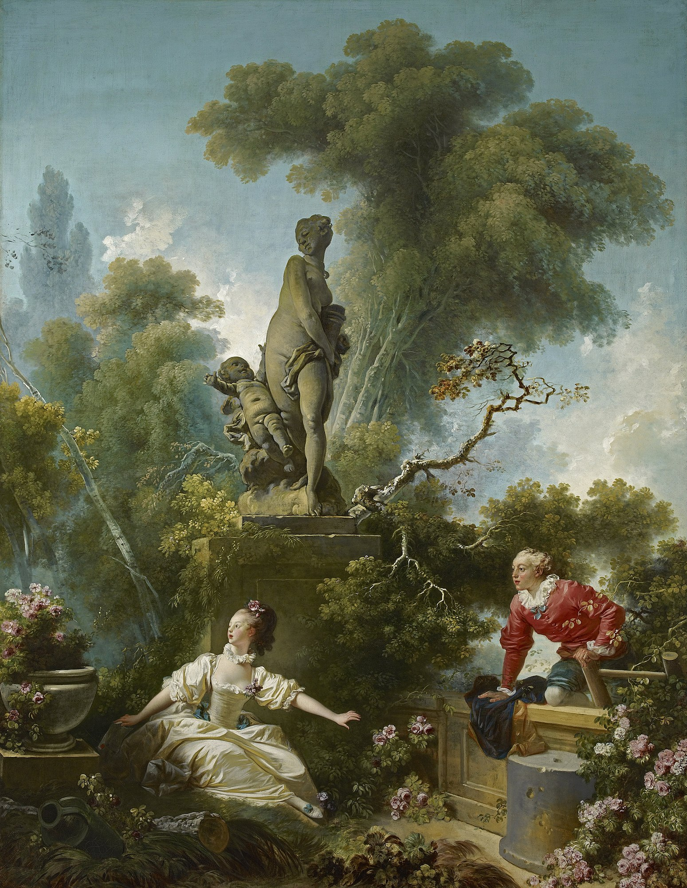
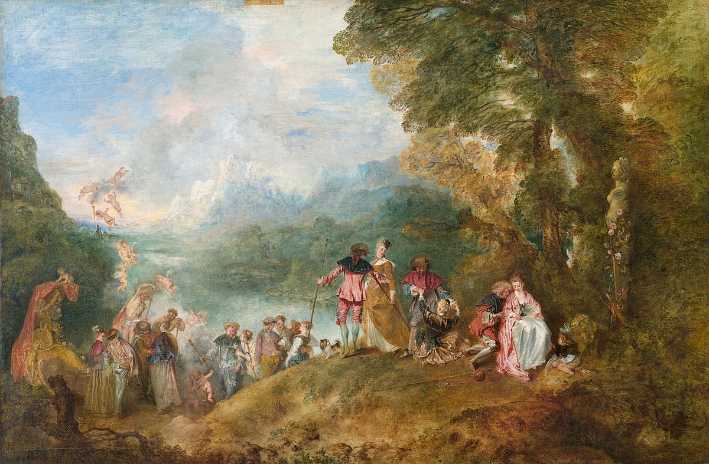
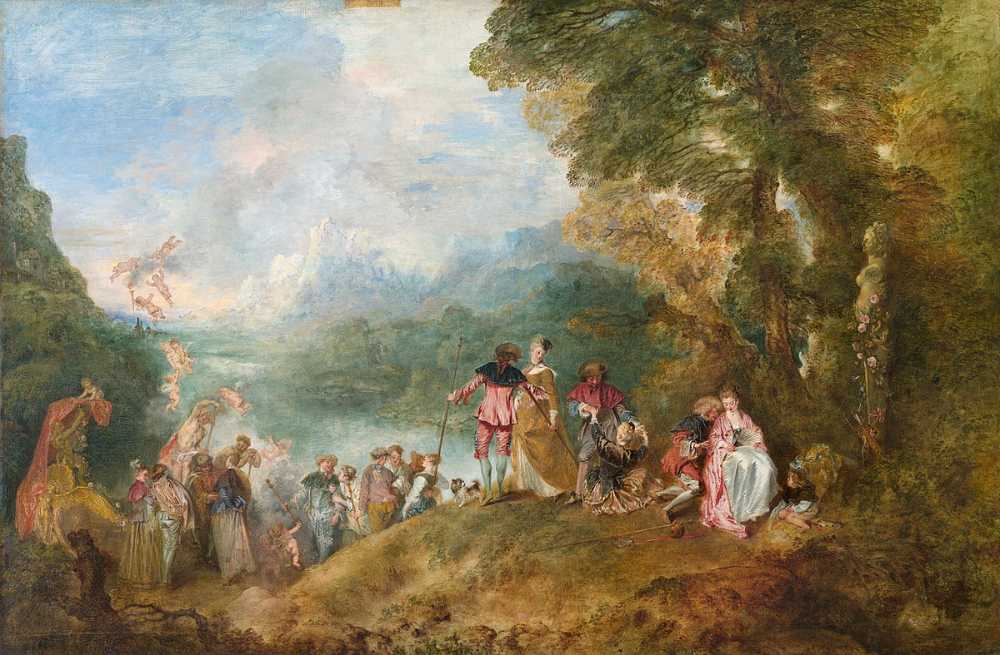

Rococo
Rococo
History
The Rococo originated in France during the 1720s. It takes its name from the French word 'rocaille', which means rock or broken shell, a shape that is often part of the designs of this art style. The Rococo is also known as the final phase of the Baroque art style. After its creation in France, it expanded to other countries of Europe such as Italy, Austria, Germany, and Russia.
Characteristics
PaintingS
Use of light and pastel colors
Themes of sensual love and nature

The Meeting by Jean-Honoré Fragonard
Furniture and Decoration
Use of elaborated curves and scrolls
Ornaments shaped like shells and plants
Asymmetry desings

Kaisersaal of Würzburg Residence by Balthasar Neumann
Notable Paintings
The Swing by Jean-Honoré Fragonard
 Pilgrimage to Cythera by Jean-Antoine Watteau

The Declaration of Love by Jean-François de Troy
Pilgrimage to Cythera by Jean-Antoine Watteau

The Declaration of Love by Jean-François de Troy